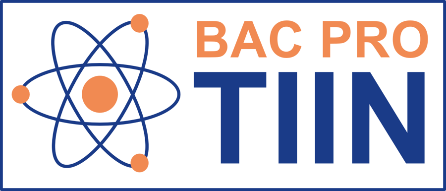

Sélectionne un élément pour explorer son noyau et ses isotopes.
Familles
Vue générale · touche une zone
Fais défiler le tableau ou utilise sa miniature · touche un élément pour ouvrir sa fiche.
Fiche de l’élément
02 · Calculer
Formulaire de physique nucléaire
Les six rubriques de la fiche TIIN v7.3, avec leurs hypothèses d’application.
03 · Comprendre
À propos de Nucléa TIIN
Un outil de consultation pour la physique nucléaire, conçu pour la classe et l’atelier.

Lycée Alexis de Tocqueville · Cherbourg-en-Cotentin Filière Métiers de l’industrie et du nucléaire
L’application
Version pédagogique, sans compte ni collecte de données : tableau des 118 éléments, fiches isotopiques issues de l’AIEA LiveChart et formulaire issu de la fiche de référence TIIN v7.3.
118éléments
3 385fiches isotopiques
6rubriques de formules
Données et méthode
Les masses atomiques du tableau sont indicatives et distinctes des masses des noyaux. Les états fondamentaux du jeu AIEA sont inclus, ainsi que Tc-99m et Ba-137m ; les autres états métastables ne le sont pas. Extraction des états fondamentaux : 18 octobre 2023.
Après un premier chargement depuis un site sécurisé (HTTPS), la consultation fonctionne sans réseau. Sur téléphone, ajoute l’application à l’écran d’accueil pour l’ouvrir comme une application.